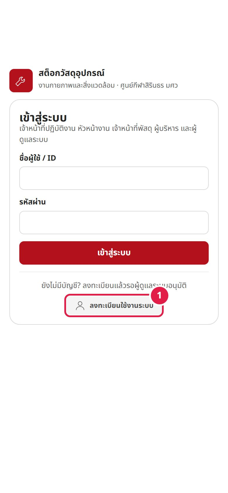
1
เปิดหน้าเข้าสู่ระบบ แล้วกด “ลงทะเบียนใช้งานระบบ”
ยังไม่มีบัญชี กดปุ่ม ลงทะเบียนใช้งานระบบ 1 ใต้ฟอร์มเข้าสู่ระบบ — ลงทะเบียนแล้วรอผู้ดูแลระบบอนุมัติ
ผู้ดูแลระบบสร้างบัญชีให้ก็ได้ — จะได้รับ ID และรหัสผ่านชั่วคราว ข้ามไปข้อ 5

ศูนย์กีฬาสิรินธร มหาวิทยาลัยศรีนครินทรวิโรฒ · ทำตามทีละขั้น พร้อมภาพหน้าจอจริงและวิดีโอสอนของระบบ
ที่มาและจุดประสงค์ 5 บทบาท และสาธิตฟังก์ชันหลักบนหน้าจอจริง ตั้งแต่ลงทะเบียน เบิก รับเข้าด้วย AI แดชบอร์ด จนถึงการจัดการสิทธิ์
ใช้ได้ทั้งบนมือถือและคอมพิวเตอร์ ผ่านเว็บเบราว์เซอร์
ภาพรวมของระบบ การลงทะเบียน 2 ขั้น และการเข้าสู่ระบบ
ใช้บริหารสต็อก วัสดุอุปกรณ์ของงานกายภาพและสิ่งแวดล้อม — วัสดุไฟฟ้า วัสดุประปาและสุขภัณฑ์ วัสดุซ่อมบำรุงและก่อสร้าง สนามและภูมิทัศน์ สิ่งแวดล้อมและจัดการขยะ และอุปกรณ์ความปลอดภัย · บันทึกการรับเข้าพร้อมรูปใบส่งของ และการเบิกไปใช้ที่ 12 สนาม / อาคาร ของศูนย์กีฬา ทุกครั้งมีรูปถ่าย ผู้ทำรายการ และวันเวลาเป็นหลักฐาน
ดูวัสดุคงเหลือ · เบิกวัสดุไปใช้ที่สนาม / อาคาร · ดูประวัติ
ทำได้เหมือนเจ้าหน้าที่ปฏิบัติงาน และดูแดชบอร์ดการรับเข้า–เบิกออก
รับวัสดุเข้า (ให้ AI ช่วยอ่านใบส่งของได้) · เพิ่ม / แก้ไขรายการวัสดุ · ดูแดชบอร์ด (เบิกไม่ได้)
ดูวัสดุคงเหลือ แดชบอร์ด และประวัติ (ดูอย่างเดียว)
ทำได้เหมือนเจ้าหน้าที่พัสดุ และอนุมัติบัญชี จัดการสิทธิ์ ดูประวัติเข้าใช้ (ไม่ถูกจำกัดสิทธิ์)
วงกลมสีแดง 1 ในภาพ = ตำแหน่งที่ต้องกด ตรงกับเลขในคำอธิบาย

ยังไม่มีบัญชี กดปุ่ม ลงทะเบียนใช้งานระบบ 1 ใต้ฟอร์มเข้าสู่ระบบ — ลงทะเบียนแล้วรอผู้ดูแลระบบอนุมัติ
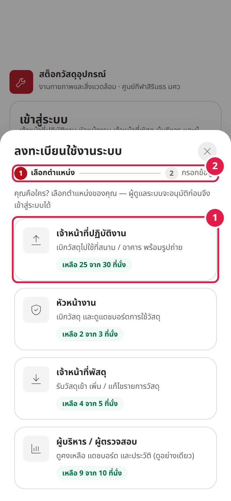
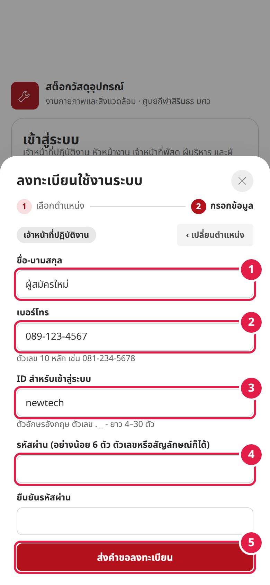
กด ‹ เปลี่ยนตำแหน่ง เพื่อกลับไปเลือกตำแหน่งใหม่
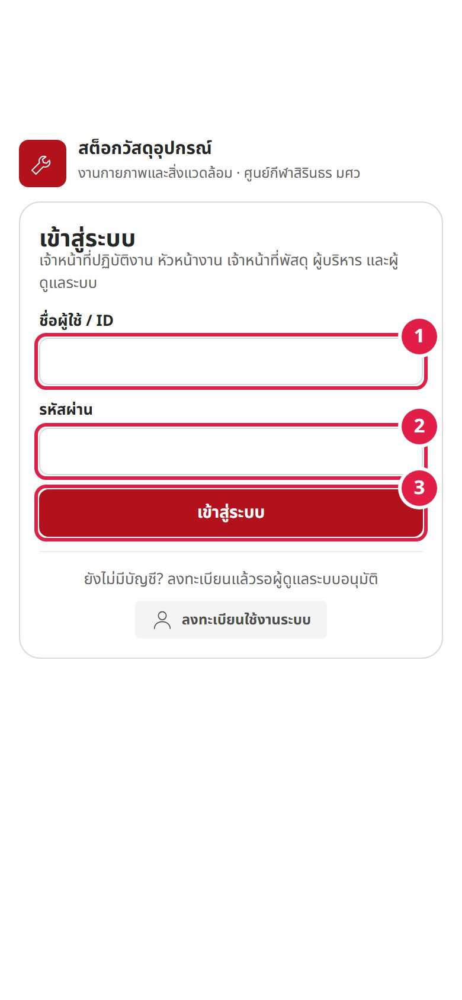
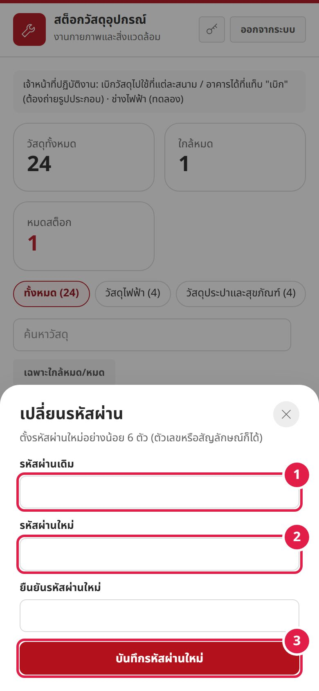
ได้รหัสผ่านชั่วคราวจากผู้ดูแลระบบ? หลังเข้าสู่ระบบครั้งแรก ระบบให้ตั้งรหัสใหม่ทันที (ยังใช้งานอื่นไม่ได้จนกว่าจะตั้งเสร็จ)
เปลี่ยนรหัสเองได้ทุกเมื่อ ที่ปุ่มรูปกุญแจบนแถบด้านบน
ทุกบทบาท · แท็บ “วัสดุอุปกรณ์”
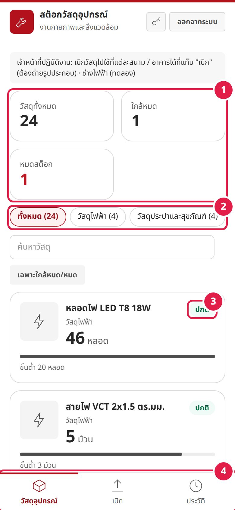
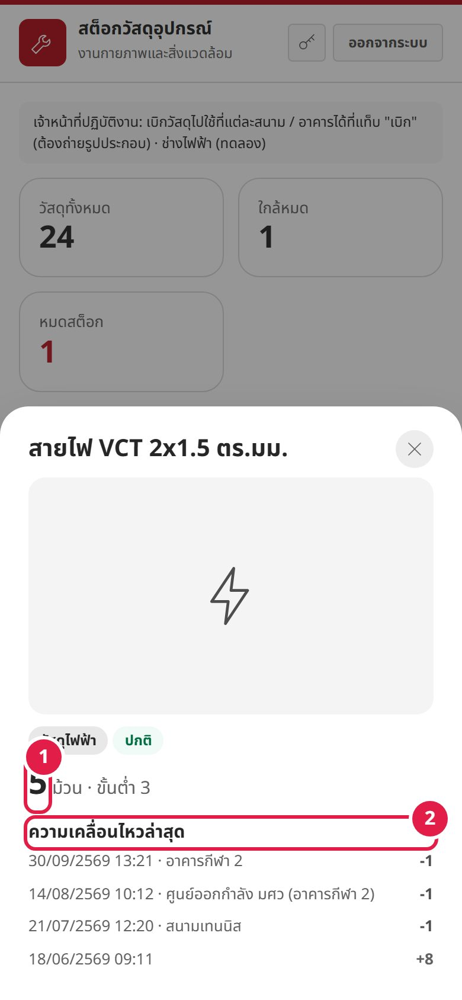
กดปุ่ม ✕ มุมขวาบน หรือแตะพื้นที่นอกหน้าต่างเพื่อปิด
เจ้าหน้าที่ปฏิบัติงาน / หัวหน้างาน · แท็บ “เบิก”
ดูคงเหลือ เลือกสนาม / อาคาร เลือกวัสดุ ถ่ายรูป ส่งใบเบิก และตรวจดูที่ประวัติ
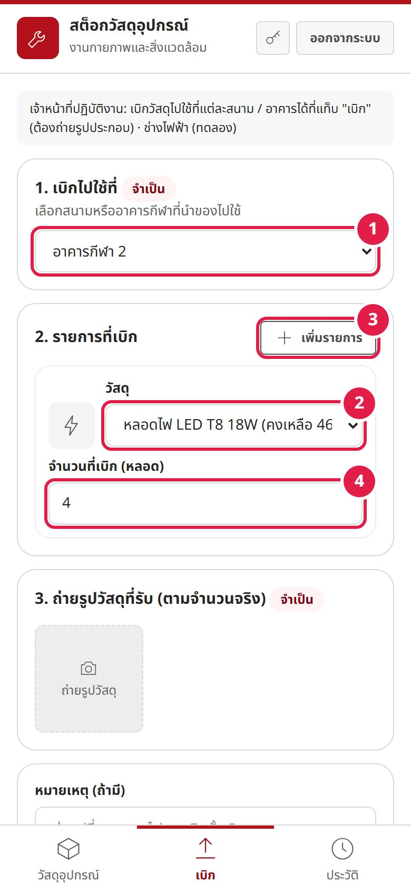
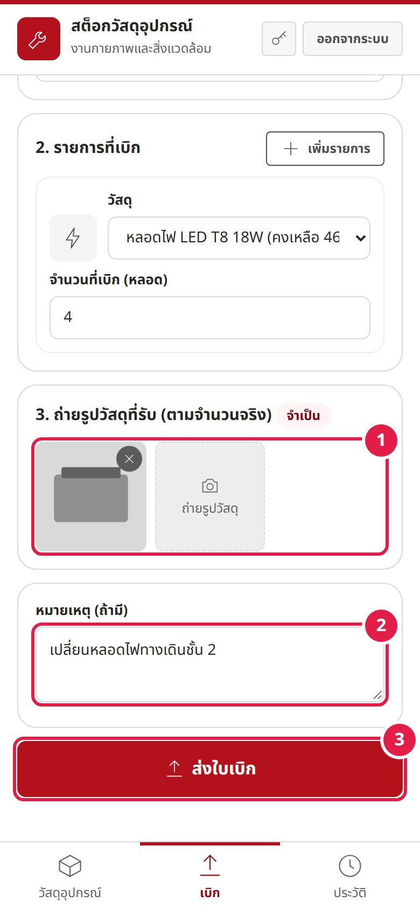
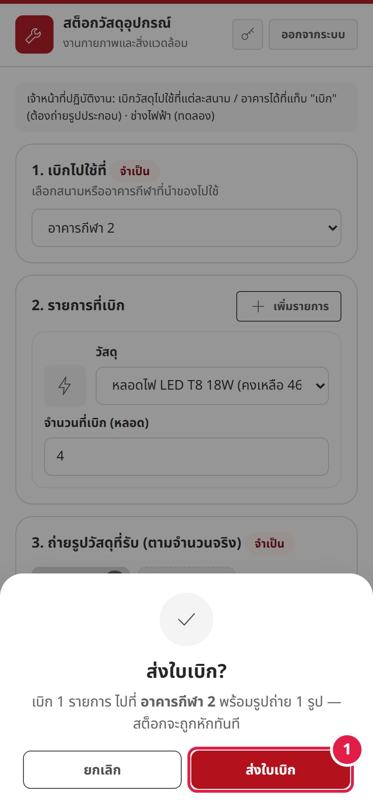
ตรวจสรุปจำนวนรายการ พื้นที่ และจำนวนรูป แล้วกด ส่งใบเบิก 1 — จำนวนคงเหลือถูกหักทันที แล้วระบบพาไปที่แท็บ “ประวัติ”
แดชบอร์ด: หัวหน้างาน / เจ้าหน้าที่พัสดุ / ผู้บริหาร · ประวัติ: ทุกบทบาท
เลือกช่วงเวลาและพื้นที่ ดูกราฟ อันดับวัสดุที่เบิกมากที่สุด และประวัติย้อนหลัง
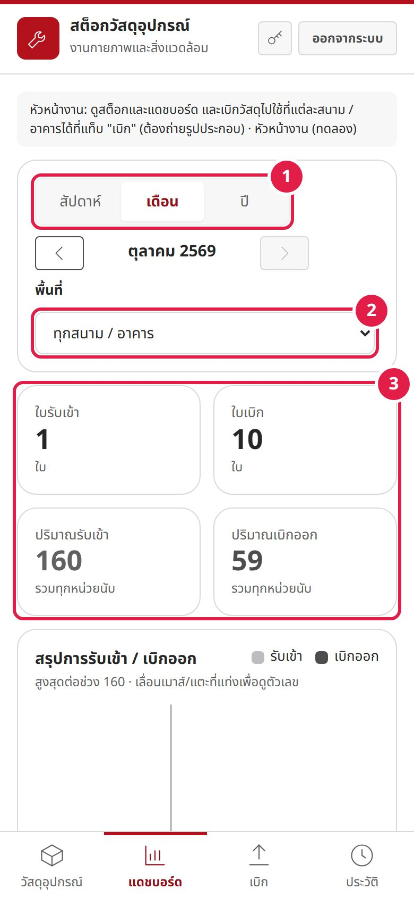
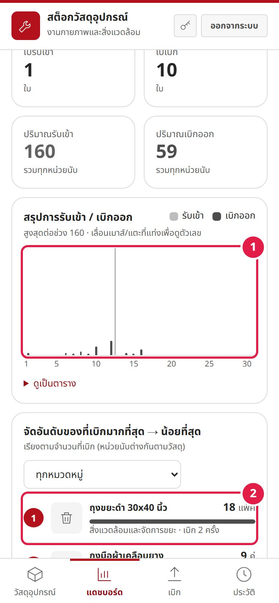
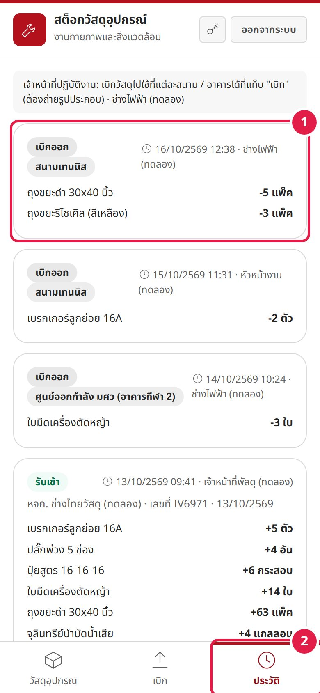
ป้าย รับขาด แสดงเมื่อรับจริงน้อยกว่าที่ระบุในเอกสาร
เจ้าหน้าที่พัสดุ / ผู้ดูแลระบบ · แท็บ “รับเข้า”
ถ่ายรูปใบส่งของ ให้ AI อ่าน ตรวจแถวแดง ใส่จำนวนรับจริง ยืนยันรับเข้า และเพิ่มวัสดุใหม่
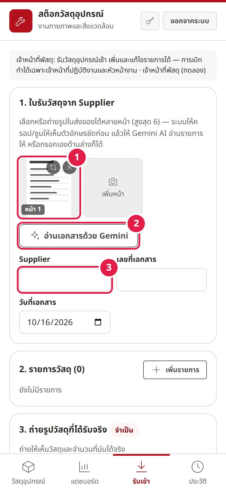
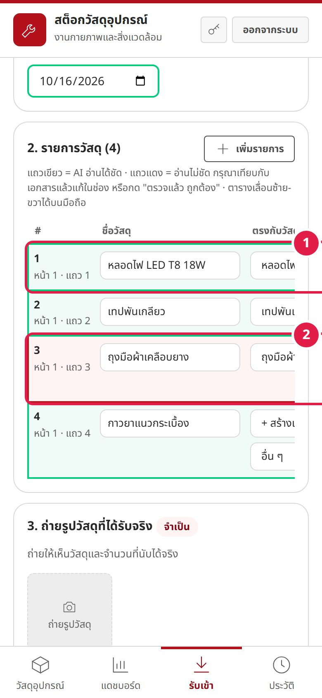
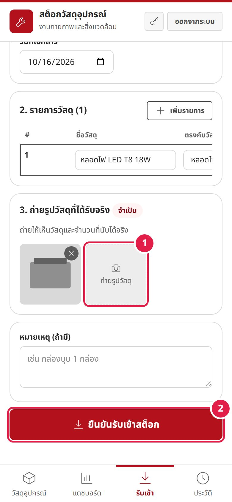
ถ้ามีแถวแดงที่ยังไม่ได้ตรวจ หรือรับจริงน้อยกว่าเอกสาร หน้าต่างยืนยันจะเตือนเป็นตัวหนาสีแดง
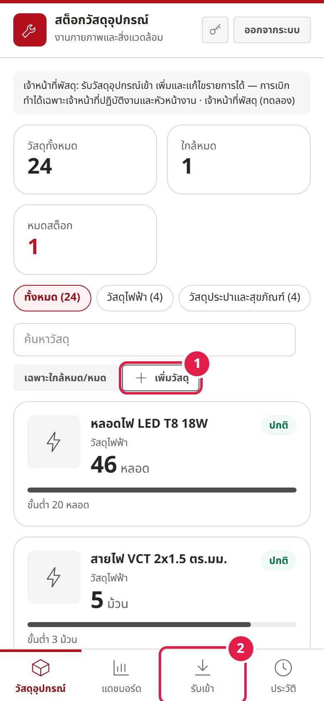
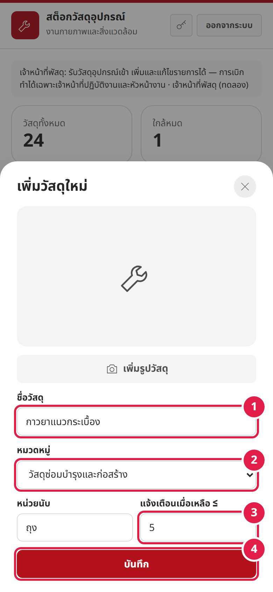
แท็บ “จัดการสิทธิ์” (ไอคอนโล่) — เห็นเฉพาะผู้ดูแลระบบ
อนุมัติผู้ลงทะเบียน สร้างบัญชีพร้อมรหัสชั่วคราว เปิด / ปิดสิทธิ์รายตำแหน่ง และดูประวัติเข้าสู่ระบบ
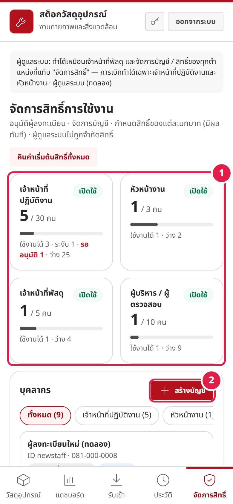
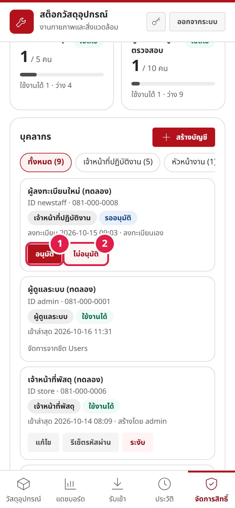
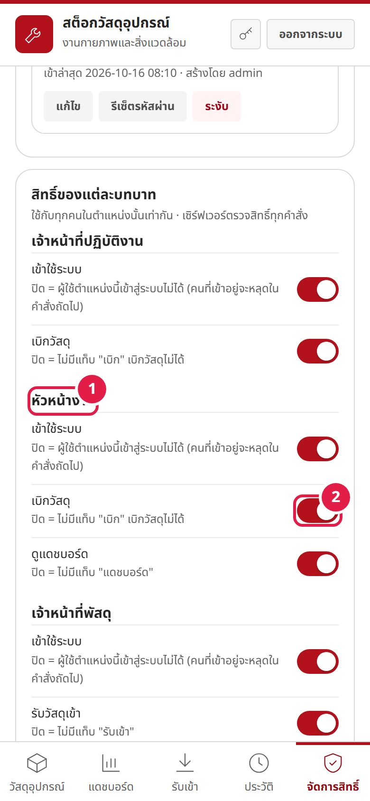
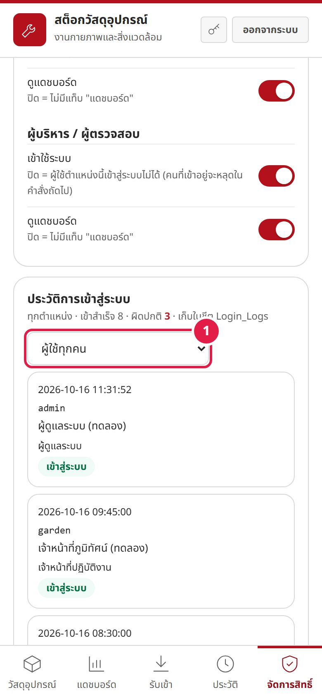
| สิทธิ์ (สวิตช์) | เจ้าหน้าที่ปฏิบัติงาน | หัวหน้างาน | เจ้าหน้าที่พัสดุ | ผู้บริหาร |
|---|---|---|---|---|
| เข้าใช้ระบบ | ✓ | ✓ | ✓ | ✓ |
| เบิกวัสดุ | ✓ | ✓ | – | – |
| รับวัสดุเข้า | – | – | ✓ | – |
| เพิ่ม / แก้ไขรายการวัสดุ | – | – | ✓ | – |
| อ่านใบส่งของด้วย AI | – | – | ✓ | – |
| ดูแดชบอร์ด | – | ✓ | ✓ | ✓ |
✓ = มีสวิตช์ให้เปิด / ปิด (ค่าเริ่มต้นเปิด) · – = ตำแหน่งนั้นไม่มีสิทธิ์นี้ · ผู้ดูแลระบบไม่ถูกจำกัดสิทธิ์ (แต่เบิกไม่ได้ เพื่อแยกหน้าที่รับเข้ากับเบิก)
Username · DisplayName · Role = admin · Status = active และพิมพ์รหัสผ่านในช่อง NewPasswordREG_CODE = รหัสลงทะเบียนที่แจกเฉพาะบุคลากร (ฟอร์มลงทะเบียนจะขอรหัสนี้) · GEMINI_API_KEY = เปิดการอ่านใบส่งของด้วย AI (รัน testGemini ก่อนเผยแพร่เว็บ)บัญชีที่ลงทะเบียนใหม่ต้องให้ผู้ดูแลระบบอนุมัติก่อน ติดต่อผู้ดูแลระบบให้ตรวจรายการลงทะเบียน
ผู้ดูแลระบบปิดการเข้าใช้ของตำแหน่งนั้นชั่วคราว หรือระงับบัญชีของคุณ — ติดต่อผู้ดูแลระบบ
ติดต่อผู้ดูแลระบบเพื่อรีเซ็ต ระบบจะให้รหัสชั่วคราว และให้ตั้งรหัสใหม่ของคุณเองตอนเข้าครั้งแรก
ยาวอย่างน้อย 6 ตัว จะเป็นตัวเลขหรือสัญลักษณ์ก็ได้ ขอแค่ไม่เหมือน ID ชื่อ หรือเบอร์โทรของคุณ
แต่ละตำแหน่งมีจำนวนที่นั่งสูงสุด (เจ้าหน้าที่ปฏิบัติงาน 30 · หัวหน้างาน 3 · เจ้าหน้าที่พัสดุ 5 · ผู้บริหาร 10) ติดต่อผู้ดูแลระบบให้ลบบัญชีที่ไม่ใช้แล้ว
การเบิกทำได้เฉพาะเจ้าหน้าที่ปฏิบัติงานและหัวหน้างาน และผู้ดูแลระบบต้องเปิดสิทธิ์ “เบิกวัสดุ” ไว้ ต้องเลือกสนาม / อาคาร ใส่จำนวนไม่เกินคงเหลือ และถ่ายรูปอย่างน้อย 1 รูป ถ้าวัสดุหมด ให้แจ้งเจ้าหน้าที่พัสดุเพื่อรับเข้า
ใบเบิกที่ส่งแล้วแก้ไม่ได้ (เพื่อให้ประวัติเป็นหลักฐาน) หากคืนวัสดุ ให้เจ้าหน้าที่พัสดุบันทึกรับเข้าพร้อมหมายเหตุ “คืนจากใบเบิก …”
กดไอคอนครอปบนรูปเอกสารเพื่อซูมให้ตารางเต็มกรอบแล้วอ่านใหม่ หรือแก้ในตารางเอง · ตรวจแถวแดงเทียบกับเอกสารทุกครั้งก่อนยืนยัน
การรับเข้าและการเบิกต้องมีรูปวัสดุอย่างน้อย 1 รูป รองรับ JPG / PNG / WebP
กดปุ่ม ออกจากระบบ มุมขวาบน · ถ้าใช้เครื่องส่วนกลาง ควรออกจากระบบทุกครั้ง